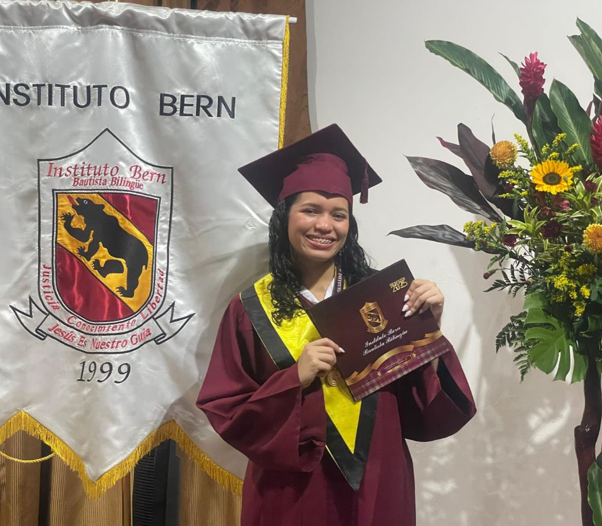
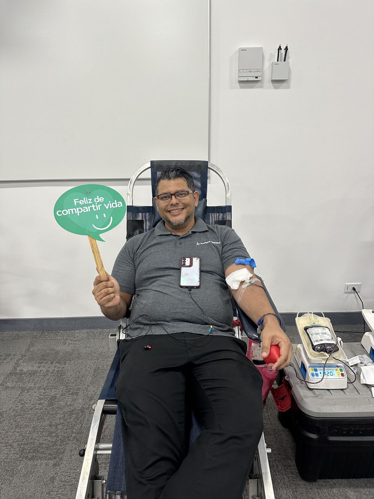
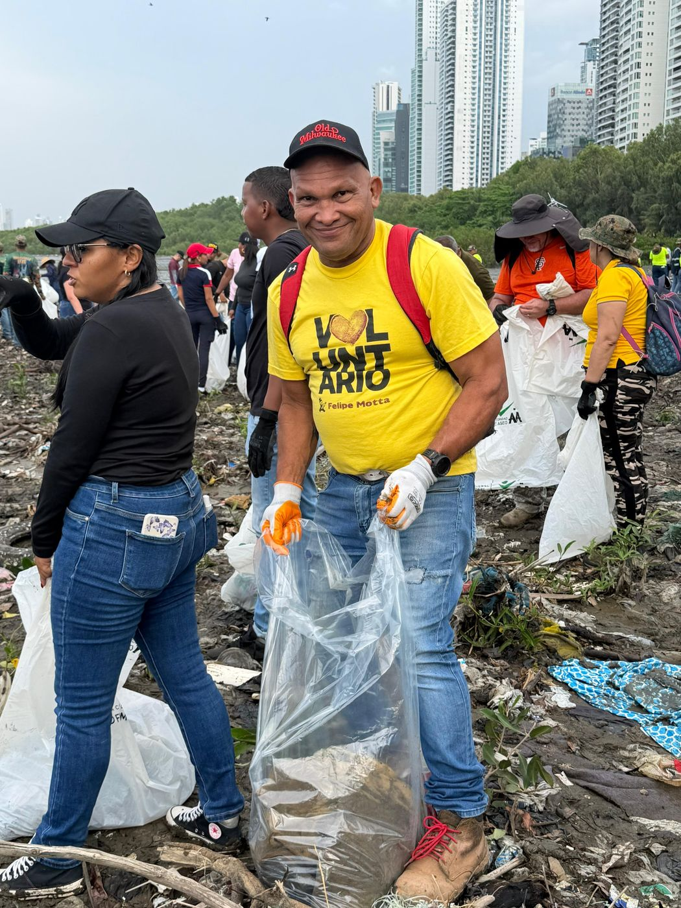
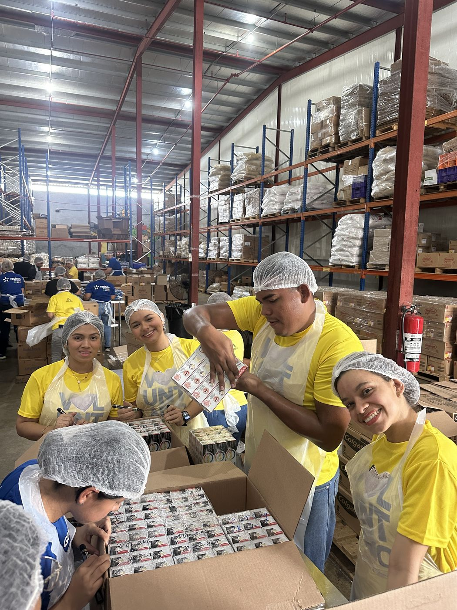

Inducción al Voluntariado
7 pasos · unos 10 minutos
Paso 1 de 7
¡Bienvenido al equipo de voluntarios!
Este curso está diseñado para todos los colaboradores de Felipe Motta que quieren sumarse al programa de voluntariado de la Fundación. Al completarlo sabrás cómo funciona el programa, cuáles son tus responsabilidades y cómo se reconoce tu tiempo.
Nuestra visión
Somos una fundación empresarial que, mediante su voluntariado, deja huellas en nuestra comunidad a través de la inversión social estratégica.
Nuestros valores
Integridad, Servicio, Excelencia y Compromiso guían cada actividad — desde una limpieza de playa hasta una colecta de sangre.
Documentos oficiales
Estos son los documentos que debes leer como parte de tu inducción. Puedes descargarlos y consultarlos cuando quieras.
Paso 2 de 7
Quiénes somos
Misión, visión y los tres pilares que ordenan todo lo que hacemos.
Misión
Fortalecer a la comunidad panameña mediante la inversión social estratégica, promoviendo el bienestar y desarrollo sostenible de las personas a las que servimos.
Visión
Somos una fundación empresarial que, mediante su voluntariado, deja huellas en nuestra comunidad a través de la inversión social estratégica.
Nuestros tres pilares
Nuestro enfoque se organiza en tres pilares.



Gobierno corporativo
La Fundación es dirigida por una Junta Directiva, órgano supremo encargado de las decisiones estratégicas, y una Dirección Ejecutiva a cargo de la gestión diaria. El personal voluntario está compuesto por colaboradores de Felipe Motta S.A.
Paso 3 de 7
Tus derechos y deberes
Al firmar el Manual del Voluntario te comprometes a conocer y respetar estos derechos y deberes. Es un requisito entregar una copia firmada al Coordinador de Voluntariado.
Tus derechos
- Ser tratado con respeto, cordialidad, confianza y amabilidad.
- Recibir los recursos, materiales, orientación y apoyo necesarios.
- Realizar tu labor en condiciones de seguridad y con cobertura de riesgos.
- Recibir orientación, entrenamiento, supervisión y apoyo de los Coordinadores.
- Recibir una descripción detallada de la labor que realizarás.
- Que tu tiempo no se pierda por falta de planificación.
- Ofrecer sugerencias sobre tu labor y sobre el programa.
- Que se mantenga un registro de tus horas de voluntariado.
Tus deberes
- Colaborar con el Coordinador, el Comité de Acción y el equipo de voluntarios.
- Participar en las sesiones de orientación y capacitación.
- Leer y firmar el Manual del Voluntario.
- Poner en práctica los valores corporativos para representar bien a la Fundación.
- Informar al Coordinador si vas a llegar tarde o a ausentarte.
- Mantener la confidencialidad de la información de los beneficiarios.
- Brindar tu opinión para la mejora continua del programa.
Proceso de incorporación
Para unirte al programa, debes expresar tu interés al Coordinador de Voluntariado, completar el formulario de inscripción, y leer y firmar el Manual del Voluntario. El programa está abierto a todos los colaboradores de Felipe Motta S.A. que deseen contribuir con su tiempo y habilidades.
Fuente: Manual del Voluntario
Paso 4 de 7
Cómo nos comportamos
El respeto y la adherencia a estas políticas son necesarios para asegurar el buen funcionamiento de nuestro programa de voluntariado corporativo.
Estándares de conducta
- Ausencias y tardanzas
- Debes llamar al Coordinador de Voluntariado con al menos 24 horas de anticipación para notificar si llegarás tarde o te vas a ausentar.
- Lista de asistencia
- Debes firmar la lista de asistencia en cada actividad en la que participes.
- Confidencialidad
- Tienes la obligación de mantener la confidencialidad de la información relacionada con los beneficiarios de las organizaciones socias y cualquier otra información sensible.
- Uso de vehículos
- Si tu labor implica trasladarte en un vehículo propio, debes portar licencia vigente y seguro.
- Reembolso de gastos
- Para ser reembolsado por gastos relacionados al Programa, necesitas autorización previa del Coordinador y los recibos correspondientes.
- Identificación
- Debes portar una identificación que señale tu nombre y el nombre de la Fundación durante cada actividad.
- Proselitismo, donaciones y prohibiciones
- No puedes promover una agenda política o religiosa durante tu labor voluntaria, ni solicitar fondos a terceros en nombre de la Fundación. Durante la labor voluntaria está prohibido fumar, libar licor, consumir drogas o portar armas.
Código de Ética y Conducta
Este código es una guía para todos los miembros de la organización —voluntarios y Junta Directiva— para asegurar que actúen de manera ética, responsable y profesional en toda actividad relacionada con la Fundación Felipe Motta.
- Integridad
- Responsabilidad
- Respeto
- Profesionalismo
- Confidencialidad
- Conflicto de interés
- Se considera conflicto de interés cualquier situación en la que un miembro tenga intereses personales o financieros que puedan afectar negativamente las decisiones o acciones de la Fundación. Si te encuentras en esta situación, debes informarlo inmediatamente a la Junta Directiva.
- Comunicación
- La comunicación interna se comparte por reuniones, redes internas, correos y boletines. La externa, por boletines y redes sociales. Toda información compartida debe ser exacta y oportuna, y respetar la confidencialidad de los miembros.
- Nuestro compromiso
- Nos comprometemos a actuar con integridad y ética en todas nuestras actividades, respetando los derechos humanos y promoviendo la igualdad y la justicia social. Si se detecta una violación de este código, se investigará y abordará de manera justa y profesional. Todos los miembros están obligados a cumplir con este código y a reportar cualquier violación de inmediato.
Fuente: Manual del Voluntario · Código de Ética y Conducta
Paso 5 de 7
Salvaguarda y denuncias
Nos comprometemos a promover y salvaguardar los derechos humanos, garantizando un entorno seguro y respetuoso en todas nuestras actividades. Esta política aplica a todos los miembros de la Fundación, incluyendo Junta Directiva y voluntarios.
Comportamiento aceptable
- Respetar la dignidad y los derechos de todas las personas, sin importar raza, etnia, religión, género, orientación sexual, discapacidad u otra característica.
- Mantener un trato amable, cortés y profesional.
- Fomentar un ambiente inclusivo que valore ideas y perspectivas diversas.
- Escuchar activamente, con empatía y consideración.
- Respetar la confidencialidad y privacidad de la información personal.
Comportamiento inaceptable
- Cualquier forma de discriminación.
- Acoso verbal, físico o sexual, incluyendo bromas ofensivas o tocamientos no deseados.
- Abuso de poder o explotación, especialmente hacia personas en situación de vulnerabilidad.
- Uso inapropiado o divulgación no autorizada de información personal.
- Cualquier acción que viole los derechos humanos reconocidos internacionalmente.
- Salvaguardia de la niñez
- En el programa de becas estudiantiles, la Fundación garantiza la salvaguardia y el bienestar de los niños y jóvenes beneficiarios, mediante la selección cuidadosa de tutores y mentores, capacitación especializada en prevención del abuso infantil y la promoción de un entorno seguro para su desarrollo integral.
- Grupos de interés
- Esta política reconoce como grupos de interés a los Voluntarios, la Comunidad, las Organizaciones Beneficiarias y la Junta Directiva. Se solicitará consentimiento informado antes de usar la imagen, nombre o información personal de alguien en comunicaciones internas o externas.
Sistema de denuncias
Establecemos un sistema de denuncias justo, eficaz y transparente para recibir y manejar reportes relacionados con violaciones de la ética, la legalidad o las políticas internas. Aplica a todos los miembros de la Junta Directiva, voluntarios y cualquier persona relacionada con la Fundación.
Conductas sujetas a denuncia
- Discriminación, acoso, amenaza, hostigamiento o violencia.
- Corrupción, soborno, extorsión o fraude.
- Negligencia, omisión o incumplimiento de regulaciones y leyes aplicables.
- Riesgo a la seguridad o salud de las personas.
- Riesgo al uso eficiente y ético de los recursos de la Fundación.
- Riesgo a la reputación o imagen de la Fundación.
- Medios para denunciar
- Buzón de sugerencias físico (acceso exclusivo del Presidente, permite anonimato) o el correo rse@felipemotta.com. Toda denuncia recibida será atendida en un plazo máximo de 30 días hábiles.
- Protección al denunciante
- La confidencialidad de los denunciantes se protege en todo momento. Nadie será objeto de represalias o discriminación por haber presentado una denuncia. El proceso de investigación es exhaustivo, justo y a cargo de un equipo designado por la Junta Directiva.
Fuente: Política de Salvaguarda de Derechos Humanos · Código de Ética y Conducta
Paso 6 de 7
Cómo participar
Usamos varios canales para que ninguna sucursal se quede sin enterarse de una actividad de voluntariado.
Dónde se anuncian las actividades
- Correo internoPonte al Día
- Redes internas@pontealdiaFM
- WhatsApp#somosFM
- FormularioVoluntariado 2026

Paso a paso
- Ves la actividad publicada en alguno de los canales, o llenas el formulario Voluntariado 2026 para indicar tu interés.
- Te inscribes por el formulario correspondiente.
- Te agregamos al grupo de WhatsApp de esa actividad.
- El Coordinador de Voluntariado te confirma hora, punto de encuentro y transporte.
- Recibirás instrucciones específicas de tu rol antes de iniciar cada actividad.
Puntos y reconocimiento
Cada actividad en la que participas suma puntos de voluntariado, que se acumulan durante todo el año. Ese total define los reconocimientos que recibes al cierre del año, además de una mención de agradecimiento en el boletín interno Ponte al Día y en nuestras redes.
Paso 7 de 7
Confirma tu inducción
Ya revisaste los pilares, tus derechos y deberes, los estándares de conducta, el Código de Ética, la Política de Salvaguarda y el sistema de denuncias. Completa tus datos para dejar constancia de que leíste y comprendiste esta inducción.
Inducción registrada
El equipo de la Fundación Felipe Motta se pondrá en contacto contigo para las próximas actividades de voluntariado.